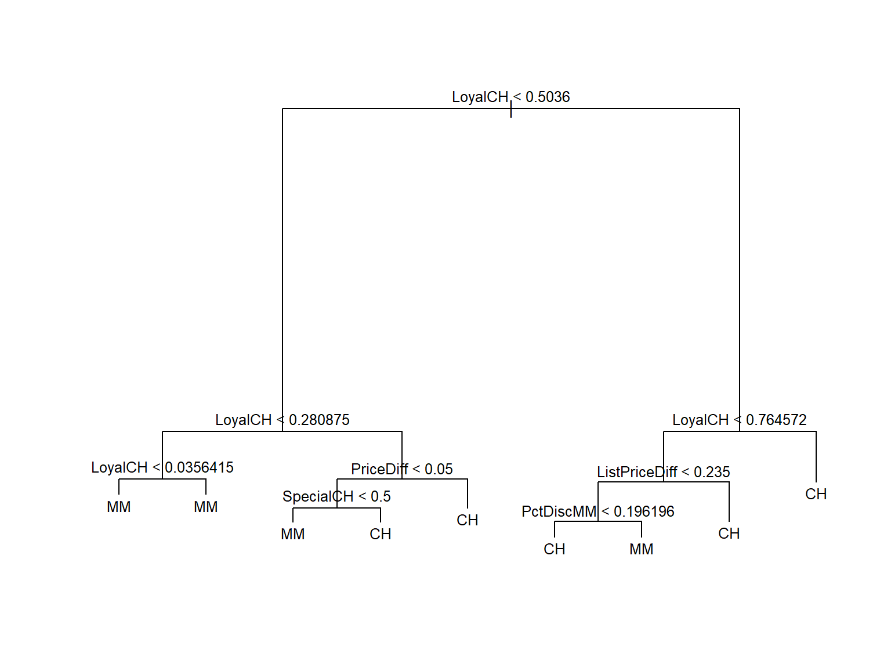
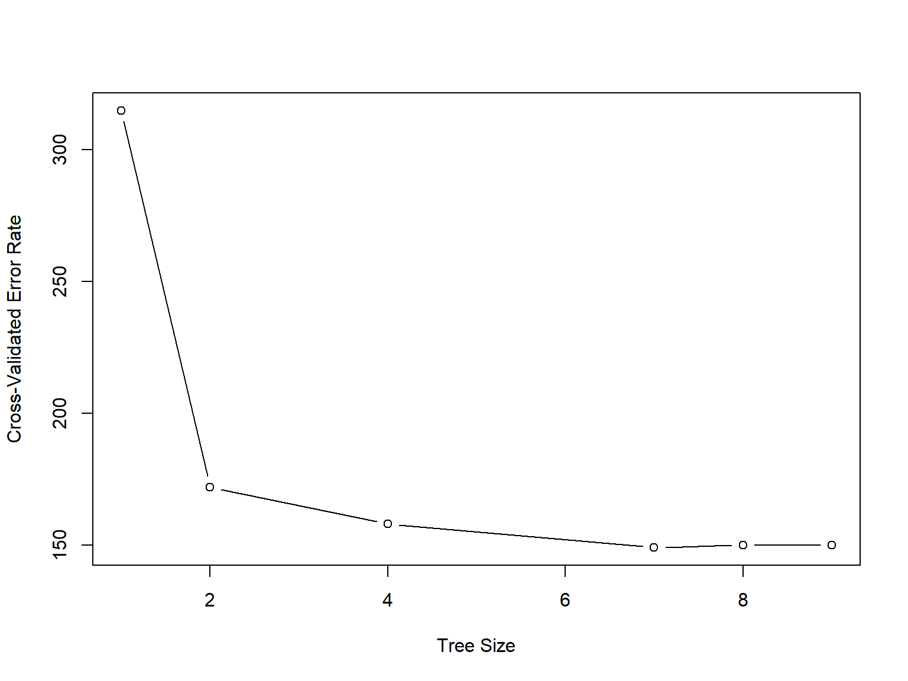
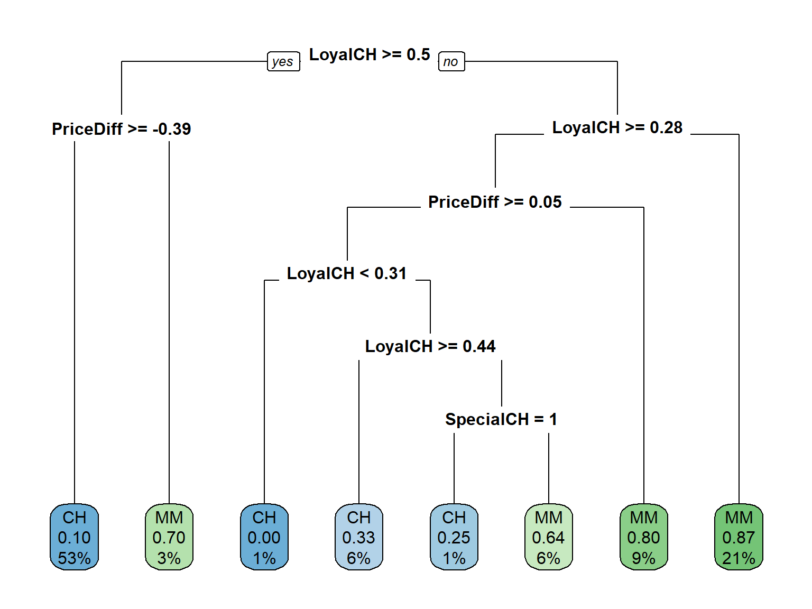
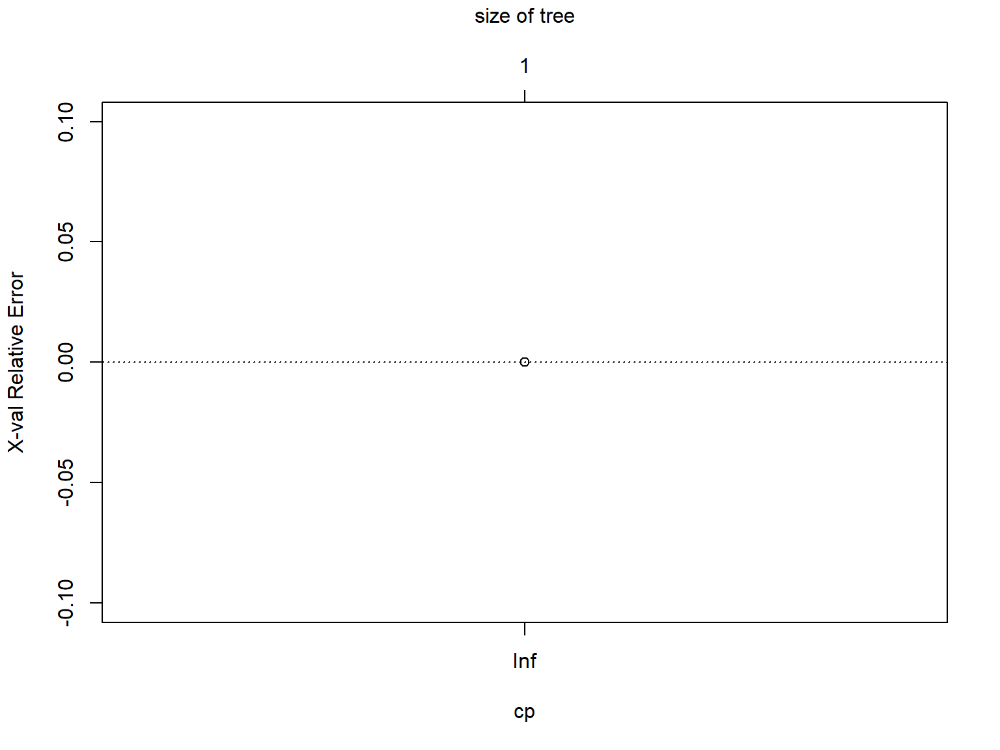

library(dplyr)Lab 1.Exercise
Exercise
This problem involves the \(OJ\) data set which is part of the ISLR2 package.
- Create a training set containing a random sample of 800 observations, and a test set containing the remaining observations.
- Use the
treepackage to fit a tree to the training data, with Purchase as the response and the other variables as predictors. Use the summary () function to produce summary statistics about the tree, and describe the results obtained. What is the training error rate? How many terminal nodes does the tree have? - Type in the name of the tree object in order to get a detailed text output. Pick one of the terminal nodes, and interpret the information displayed.
- Create a plot of the tree, and interpret the results.
- Use the tree package to predict the response on the test data, and produce a confusion matrix comparing the test labels to the predicted test labels. What is the test error rate?
- Apply the cv.tree() function to the training set in order to determine the optimal tree size.
- Produce a plot with tree size on the \(x\)-axis and cross-validated classification error rate on the \(y\)-axis.
- Which tree size corresponds to the lowest cross-validated classification error rate?
- Produce a pruned tree corresponding to the optimal tree size obtained using cross-validation. If cross-validation does not lead to selection of a pruned tree, then create a pruned tree with five terminal nodes.
- Compare the training error rates between the pruned and unpruned trees. Which is higher?
Once you have solved the exercise, try to repeat it using another R package, either rpàrt or caret. Compare the results obtained and comment about the differences observed.
Solution using tree
# Load the ISLR2 package and the OJ data set
library(ISLR2)
data(OJ)
# Create a training set containing a random sample of 800 observations, and a test set containing the remaining observations
set.seed(1)
train_idx <- sample(nrow(OJ), 800)
OJ_train <- OJ[train_idx, ]
OJ_test <- OJ[-train_idx, ]
# Fit a tree to the training data, with Purchase as the response and the other variables as predictors
library(tree)
tree <- tree(Purchase ~ ., data = OJ_train)
# Use the summary() function to produce summary statistics about the tree, and describe the results obtained
summary(tree)
Classification tree:
tree(formula = Purchase ~ ., data = OJ_train)
Variables actually used in tree construction:
[1] "LoyalCH" "PriceDiff" "SpecialCH" "ListPriceDiff"
[5] "PctDiscMM"
Number of terminal nodes: 9
Residual mean deviance: 0.7432 = 587.8 / 791
Misclassification error rate: 0.1588 = 127 / 800 cat("Training error rate for unpruned tree:", tree$dev/sum(tree$frame$wt), "\n")Training error rate for unpruned tree: cat("Number of terminal nodes in unpruned tree:", tree$frame$var[tree$frame$var == "<leaf>"] %>% length, "\n")Number of terminal nodes in unpruned tree: 9 # Create a plot of the tree
plot(tree)
text(tree, pretty = 0, cex=0.8)
# Predict the response on the test data, and produce a confusion matrix comparing the test labels to the predicted test labels
test_preds <- predict(tree, OJ_test, type = "class")
table(test_preds, OJ_test$Purchase)
test_preds CH MM
CH 160 38
MM 8 64# Calculate the test error rate
test_error_unpruned <- mean(test_preds != OJ_test$Purchase)
cat("Test error rate for unpruned tree:", test_error_unpruned, "\n")Test error rate for unpruned tree: 0.1703704 # Apply the cv.tree() function of the tree package to the training set in order to determine the optimal tree size
cv <- cv.tree(tree, FUN = prune.misclass)
# Give the code to Produce a plot with tree size on the x-axis and cross-validated classification error rate on the y-axis
plot(cv$size, cv$dev, type = "b", xlab = "Tree Size", ylab = "Cross-Validated Error Rate")
# Use the tree package to Produce a pruned tree corresponding to the optimal tree size obtained using cross-validation
pruned_tree <- prune.misclass(tree, best = cv$size[which.min(cv$dev)])
# If cross-validation does not select a pruned tree, create a tree with five terminal nodes
if (is.null(pruned_tree)) {
pruned_tree <- prune.misclass(tree, best = 8)
}
# Compare the training error rates between the pruned and unpruned trees
train_preds <- predict(tree, OJ_train, type = "class")
train_error_unpruned <- mean(train_preds != OJ_train$Purchase)
cat("Training error rate for unpruned tree:", train_error_unpruned, "\n")Training error rate for unpruned tree: 0.15875 train_preds <- predict(pruned_tree, OJ_train, type = "class")
train_error_pruned <- mean(train_preds != OJ_train$Purchase)
cat("Training error rate for pruned tree:", train_error_pruned, "\n")Training error rate for pruned tree: 0.1625 Solution using rpart
# load the necessary packages
library(rpart)
library(rpart.plot)
# load the OJ dataset
data(OJ)
# split the data into training and test sets
set.seed(123)
train <- sample(nrow(OJ), 800)
train_data <- OJ[train, ]
test_data <- OJ[-train, ]
# fit a decision tree to the training data
tree_model <- rpart(Purchase ~ ., data = train_data, method = "class")
# summarize the tree model
summary(tree_model)Call:
rpart(formula = Purchase ~ ., data = train_data, method = "class")
n= 800
CP nsplit rel error xerror xstd
1 0.49201278 0 1.0000000 1.0000000 0.04410089
2 0.03514377 1 0.5079872 0.5335463 0.03672576
3 0.02555911 2 0.4728435 0.5335463 0.03672576
4 0.01277955 4 0.4217252 0.4504792 0.03443205
5 0.01000000 7 0.3833866 0.4728435 0.03508854
Variable importance
LoyalCH StoreID PriceDiff SalePriceMM WeekofPurchase
45 9 9 6 6
PriceMM DiscMM PctDiscMM PriceCH ListPriceDiff
5 5 4 4 3
SalePriceCH STORE SpecialCH
2 1 1
Node number 1: 800 observations, complexity param=0.4920128
predicted class=CH expected loss=0.39125 P(node) =1
class counts: 487 313
probabilities: 0.609 0.391
left son=2 (450 obs) right son=3 (350 obs)
Primary splits:
LoyalCH < 0.5036 to the right, improve=134.49530, (0 missing)
StoreID < 3.5 to the right, improve= 40.88655, (0 missing)
STORE < 0.5 to the left, improve= 20.84871, (0 missing)
Store7 splits as RL, improve= 20.84871, (0 missing)
PriceDiff < 0.015 to the right, improve= 19.14298, (0 missing)
Surrogate splits:
StoreID < 3.5 to the right, agree=0.660, adj=0.223, (0 split)
WeekofPurchase < 246.5 to the right, agree=0.625, adj=0.143, (0 split)
PriceCH < 1.825 to the right, agree=0.600, adj=0.086, (0 split)
PriceMM < 1.89 to the right, agree=0.596, adj=0.077, (0 split)
ListPriceDiff < 0.035 to the right, agree=0.581, adj=0.043, (0 split)
Node number 2: 450 observations, complexity param=0.03514377
predicted class=CH expected loss=0.1355556 P(node) =0.5625
class counts: 389 61
probabilities: 0.864 0.136
left son=4 (423 obs) right son=5 (27 obs)
Primary splits:
PriceDiff < -0.39 to the right, improve=18.543390, (0 missing)
DiscMM < 0.72 to the left, improve= 9.309254, (0 missing)
SalePriceMM < 1.435 to the right, improve= 9.309254, (0 missing)
PctDiscMM < 0.3342595 to the left, improve= 9.309254, (0 missing)
LoyalCH < 0.7645725 to the right, improve= 8.822549, (0 missing)
Surrogate splits:
DiscMM < 0.72 to the left, agree=0.967, adj=0.444, (0 split)
SalePriceMM < 1.435 to the right, agree=0.967, adj=0.444, (0 split)
PctDiscMM < 0.3342595 to the left, agree=0.967, adj=0.444, (0 split)
SalePriceCH < 2.075 to the left, agree=0.949, adj=0.148, (0 split)
Node number 3: 350 observations, complexity param=0.02555911
predicted class=MM expected loss=0.28 P(node) =0.4375
class counts: 98 252
probabilities: 0.280 0.720
left son=6 (180 obs) right son=7 (170 obs)
Primary splits:
LoyalCH < 0.2761415 to the right, improve=14.991900, (0 missing)
StoreID < 3.5 to the right, improve= 6.562913, (0 missing)
Store7 splits as RL, improve= 4.617311, (0 missing)
STORE < 0.5 to the left, improve= 4.617311, (0 missing)
SpecialCH < 0.5 to the right, improve= 4.512108, (0 missing)
Surrogate splits:
STORE < 1.5 to the left, agree=0.629, adj=0.235, (0 split)
StoreID < 1.5 to the left, agree=0.589, adj=0.153, (0 split)
PriceCH < 1.875 to the left, agree=0.589, adj=0.153, (0 split)
SalePriceCH < 1.875 to the left, agree=0.586, adj=0.147, (0 split)
SalePriceMM < 1.84 to the left, agree=0.571, adj=0.118, (0 split)
Node number 4: 423 observations
predicted class=CH expected loss=0.09929078 P(node) =0.52875
class counts: 381 42
probabilities: 0.901 0.099
Node number 5: 27 observations
predicted class=MM expected loss=0.2962963 P(node) =0.03375
class counts: 8 19
probabilities: 0.296 0.704
Node number 6: 180 observations, complexity param=0.02555911
predicted class=MM expected loss=0.4222222 P(node) =0.225
class counts: 76 104
probabilities: 0.422 0.578
left son=12 (106 obs) right son=13 (74 obs)
Primary splits:
PriceDiff < 0.05 to the right, improve=12.110850, (0 missing)
SalePriceMM < 2.04 to the right, improve=11.572070, (0 missing)
DiscMM < 0.25 to the left, improve= 5.760121, (0 missing)
PctDiscMM < 0.1345485 to the left, improve= 5.760121, (0 missing)
ListPriceDiff < 0.18 to the right, improve= 5.597236, (0 missing)
Surrogate splits:
SalePriceMM < 1.94 to the right, agree=0.933, adj=0.838, (0 split)
DiscMM < 0.08 to the left, agree=0.822, adj=0.568, (0 split)
PctDiscMM < 0.038887 to the left, agree=0.822, adj=0.568, (0 split)
ListPriceDiff < 0.135 to the right, agree=0.800, adj=0.514, (0 split)
PriceMM < 2.04 to the right, agree=0.783, adj=0.473, (0 split)
Node number 7: 170 observations
predicted class=MM expected loss=0.1294118 P(node) =0.2125
class counts: 22 148
probabilities: 0.129 0.871
Node number 12: 106 observations, complexity param=0.01277955
predicted class=CH expected loss=0.4245283 P(node) =0.1325
class counts: 61 45
probabilities: 0.575 0.425
left son=24 (8 obs) right son=25 (98 obs)
Primary splits:
LoyalCH < 0.3084325 to the left, improve=3.118983, (0 missing)
WeekofPurchase < 247.5 to the right, improve=2.489639, (0 missing)
SpecialMM < 0.5 to the left, improve=2.454538, (0 missing)
PriceCH < 1.755 to the right, improve=2.048863, (0 missing)
PriceMM < 2.04 to the right, improve=1.514675, (0 missing)
Node number 13: 74 observations
predicted class=MM expected loss=0.2027027 P(node) =0.0925
class counts: 15 59
probabilities: 0.203 0.797
Node number 24: 8 observations
predicted class=CH expected loss=0 P(node) =0.01
class counts: 8 0
probabilities: 1.000 0.000
Node number 25: 98 observations, complexity param=0.01277955
predicted class=CH expected loss=0.4591837 P(node) =0.1225
class counts: 53 45
probabilities: 0.541 0.459
left son=50 (46 obs) right son=51 (52 obs)
Primary splits:
LoyalCH < 0.442144 to the right, improve=3.071463, (0 missing)
WeekofPurchase < 248.5 to the right, improve=2.208454, (0 missing)
SpecialMM < 0.5 to the left, improve=2.011796, (0 missing)
STORE < 0.5 to the left, improve=1.624324, (0 missing)
StoreID < 5.5 to the right, improve=1.624324, (0 missing)
Surrogate splits:
WeekofPurchase < 255 to the left, agree=0.622, adj=0.196, (0 split)
SalePriceCH < 1.755 to the right, agree=0.571, adj=0.087, (0 split)
STORE < 2.5 to the right, agree=0.571, adj=0.087, (0 split)
PriceMM < 2.205 to the right, agree=0.561, adj=0.065, (0 split)
DiscCH < 0.115 to the left, agree=0.561, adj=0.065, (0 split)
Node number 50: 46 observations
predicted class=CH expected loss=0.326087 P(node) =0.0575
class counts: 31 15
probabilities: 0.674 0.326
Node number 51: 52 observations, complexity param=0.01277955
predicted class=MM expected loss=0.4230769 P(node) =0.065
class counts: 22 30
probabilities: 0.423 0.577
left son=102 (8 obs) right son=103 (44 obs)
Primary splits:
SpecialCH < 0.5 to the right, improve=2.020979, (0 missing)
STORE < 1.5 to the left, improve=1.724009, (0 missing)
SpecialMM < 0.5 to the left, improve=1.680070, (0 missing)
WeekofPurchase < 245 to the right, improve=1.384615, (0 missing)
StoreID < 5.5 to the right, improve=1.319751, (0 missing)
Surrogate splits:
DiscCH < 0.27 to the right, agree=0.942, adj=0.625, (0 split)
SalePriceCH < 1.54 to the left, agree=0.942, adj=0.625, (0 split)
PctDiscCH < 0.149059 to the right, agree=0.942, adj=0.625, (0 split)
SalePriceMM < 1.64 to the left, agree=0.923, adj=0.500, (0 split)
DiscMM < 0.42 to the right, agree=0.904, adj=0.375, (0 split)
Node number 102: 8 observations
predicted class=CH expected loss=0.25 P(node) =0.01
class counts: 6 2
probabilities: 0.750 0.250
Node number 103: 44 observations
predicted class=MM expected loss=0.3636364 P(node) =0.055
class counts: 16 28
probabilities: 0.364 0.636 # plot the tree model
rpart.plot(tree_model, type = 0)
# make predictions on the test data
test_preds <- predict(tree_model, test_data, type = "class")
# create a confusion matrix
conf_matrix <- table(test_data$Purchase, test_preds)
# calculate the test error rate
test_error_rate <- 1 - sum(diag(conf_matrix)) / sum(conf_matrix)
# use cross-validation to find the optimal tree size
cv_results <- rpart.control(cp = seq(0.0001, 0.01, by = 0.0001))
cv_model <- rpart(Purchase ~ ., data = train_data, method = "class", control = cv_results)
plotcp(cv_model)
# prune the tree to the optimal size
optimal_cp <- cv_model$cptable[which.min(cv_model$cptable[, "xerror"]), "CP"]
pruned_model <- prune(tree_model, cp = optimal_cp)
# compare training error rates between the pruned and unpruned trees
train_preds <- predict(tree_model, train_data, type = "class")
train_error_rate_unpruned <- 1 - sum(diag(table(train_data$Purchase, train_preds))) / nrow(train_data)
train_preds_pruned <- predict(pruned_model, train_data, type = "class")
train_error_rate_pruned <- 1 - sum(diag(table(train_data$Purchase, train_preds_pruned))) / nrow(train_data)
cat("Training error rate (unpruned):", train_error_rate_unpruned, "\n")Training error rate (unpruned): 0.15 cat("Training error rate (pruned):", train_error_rate_pruned, "\n")Training error rate (pruned): 0.15 Solution using caret
# load the necessary packages
library(caret)
# load the OJ dataset
data(OJ)
# split the data into training and test sets
set.seed(123)
train_index <- createDataPartition(OJ$Purchase, p = 0.8, list = FALSE)
train_data <- OJ[train_index, ]
test_data <- OJ[-train_index, ]
# fit a decision tree to the training data
ctrl <- trainControl(method = "repeatedcv", number = 10, repeats = 3)
model <- train(Purchase ~ ., data = train_data, method = "rpart", trControl = ctrl)
# summarize the tree model
print(model$finalModel)
# plot the tree model
plot(model$finalModel, main = "Decision Tree")
# make predictions on the test data
test_preds <- predict(model, newdata = test_data)
# create a confusion matrix
conf_matrix <- table(test_data$Purchase, test_preds)
# calculate the test error rate
test_error_rate <- 1 - sum(diag(conf_matrix)) / sum(conf_matrix)
# use cross-validation to find the optimal tree size
tune_grid <- expand.grid(cp = seq(0.0001, 0.01, by = 0.0001))
tune_results <- train(Purchase ~ ., data = train_data, method = "rpart", trControl = ctrl, tuneGrid = tune_grid)
# prune the tree to the optimal size
pruned_model <- prune(tune_results$finalModel, cp = tune_results$bestTune$cp)
# compare training error rates between the pruned and unpruned trees
train_preds_unpruned <- predict(model, newdata = train_data)
train_error_rate_unpruned <- 1 - sum(diag(table(train_data$Purchase, train_preds_unpruned))) / nrow(train_data)
train_preds_pruned <- predict(pruned_model, newdata = train_data)
train_error_rate_pruned <- 1 - sum(diag(table(train_data$Purchase, train_preds_pruned))) / nrow(train_data)
cat("Training error rate (unpruned):", train_error_rate_unpruned, "\n")
cat("Training error rate (pruned):", train_error_rate_pruned, "\n")